Префектура Кагосима · Якусима · природа
Якусима: моховой лес, кедр Дзёмон-суги и онсэны у самого моря
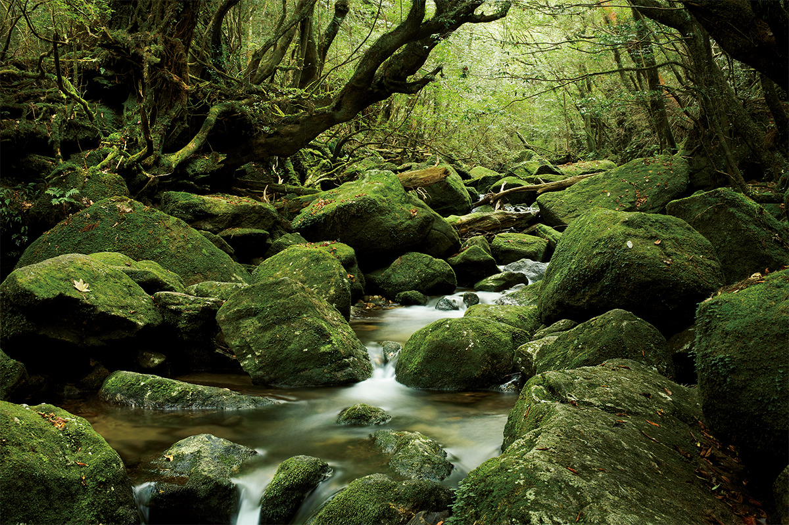
Якусиму называют «Альпами посреди океана»: из моря здесь поднимаются горы почти в два километра, а девять десятых острова покрыты лесом. Сюда едут к кедрам, которым тысячи лет, в моховые ущелья и к горячим источникам, где купаются прямо у прибоя.
Остров
Горы посреди моря
Якусима лежит в Восточно-Китайском море, примерно в 60 км к югу от самой южной точки острова Кюсю. В центре острова поднимается гора Мияноура высотой 1936 м, самая высокая вершина Кюсю, а вокруг неё стоят горы около тысячи метров. По их склонам бегут реки и прорезают глубокие ущелья. С древних времён в деревнях у подножия каждой горы почитали её как священную.
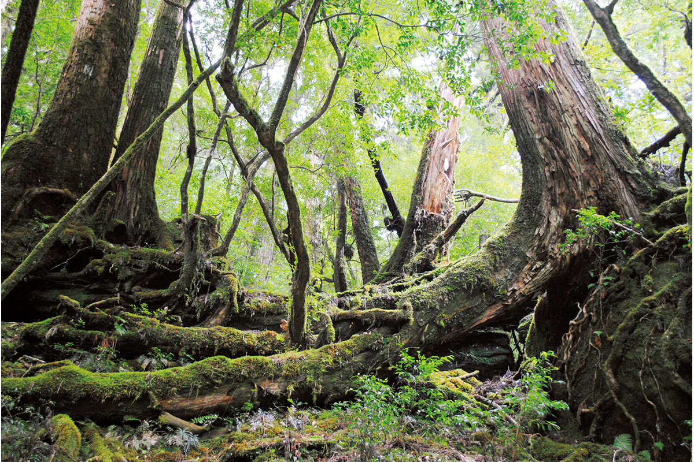
Остров южный, но из-за перепада высот на нём уживаются растения разных климатических поясов. На берегу растут баньяны и другие субтропические деревья, выше идёт вечнозелёный широколиственный лес, ещё выше криптомериевый, а у вершин луга и низкий кустарник, как в горах намного севернее. Дождей здесь больше, чем где-либо в Японии: на склонах выпадает больше 8000 мм в год. Влага питает папоротники, мхи (их на острове около 700 видов) и древние криптомерии.
Якусуги называют здешние природные криптомерии, которым больше тысячи лет. Самая известная из них, Дзёмон-суги, считается символом острова. В 1993 году Якусима первой в Японии вошла в список Всемирного природного наследия ЮНЕСКО, причём не только за экосистему, но и за природную красоту: из японских объектов такую оценку получила только она. Под охраной около пятой части острова, в том числе леса вокруг горы Мияноура и окрестности западной лесной дороги.
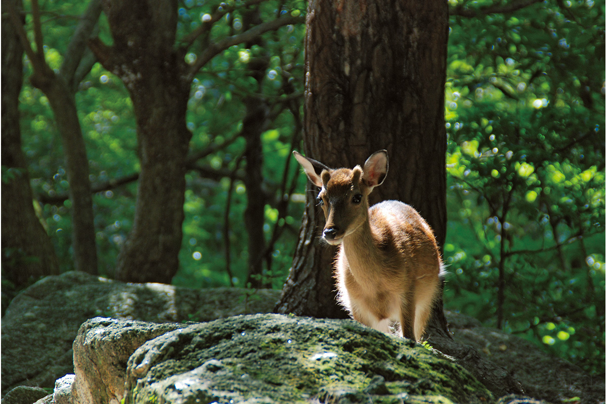
Музей
С чего начать знакомство
Перед походом в лес стоит зайти в музей «Якусуги сидзэнкан», посвящённый якусимским криптомериям и людям, которые жили рядом с ними. Здесь выставлена «ветвь жизни» Дзёмон-суги, другие редкие образцы якусуги, показывают фильм о лесе и людях, а по макетам и компьютерной графике можно проследить, как кедры использовали в прошлом.
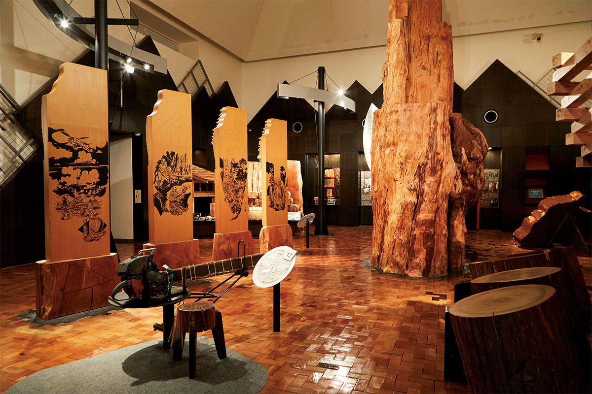
Рядом находится Центр Всемирного наследия Якусимы, где рассказывают, за что остров попал в список ЮНЕСКО.
Музей «Якусуги сидзэнкан»
- Адрес
- префектура Кагосима, уезд Кумагэ, город Якусима, Анбо, 2739-343
- Телефон
- +81 997-46-3113
- Часы работы
- 9:00–17:00 (вход до 16:30)
- Выходные
- первый вторник месяца, новогодние праздники
- Цены / Вход
- взрослые 600 иен, старшеклассники и студенты 400 иен, школьники 300 иен
Центр Всемирного наследия Якусимы
- Адрес
- префектура Кагосима, уезд Кумагэ, город Якусима, Анбо, Маэдакэ, 2739-343
- Телефон
- +81 997-46-2992
- Часы работы
- 9:00–17:00
- Выходные
- суббота (только с декабря по февраль)
- Сайт
- env.go.jp
Ущелье
Сиратани-Унсуйкё: лес, где растёт мох
Кроме хорошего отдыха, на Якусиме обязательно нужно пройтись по лесу. Ущелье Сиратани-Унсуйкё знаменито своим «моховым лесом». Даже на острове, где мхов около 700 видов, здесь они особенно густые и красивые: стоит углубиться в чащу, и вокруг остаётся только зелёный полумрак.
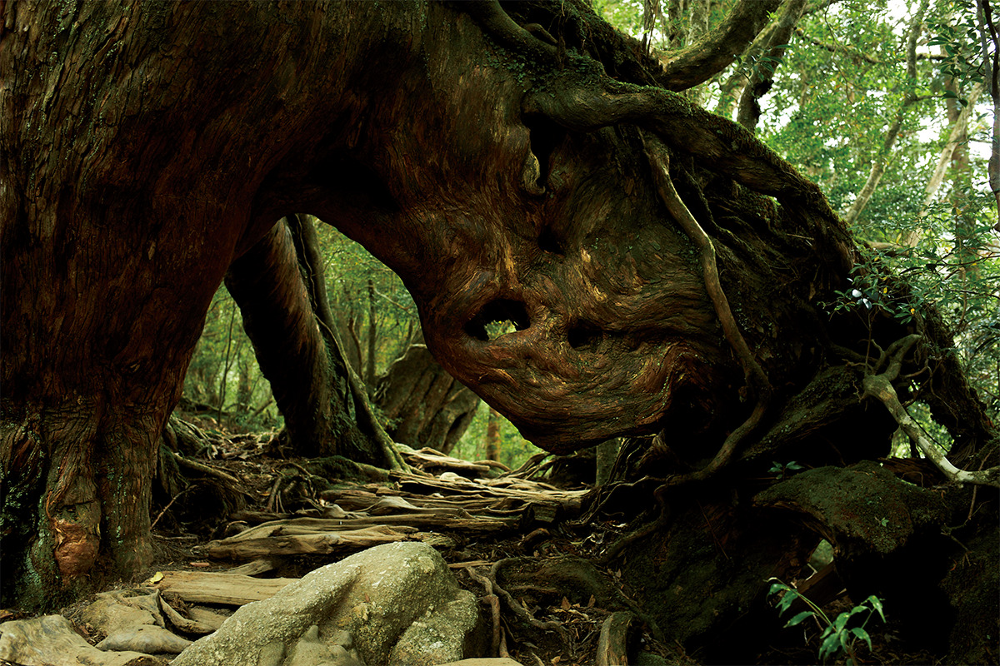
Лучше идти с гидом. Компания Yakushima Messenger водит небольшие группы и подстраивает маршрут под цели каждого участника. Гид с многолетним опытом объясняет, как возник остров и почему его лес так красив, чем отличаются кедры, выросшие в разных местах, и показывает уголки ущелья, о которых не пишут в путеводителях. Тур в 2023 году стоил 12 600 иен со страховкой, дети младшего школьного возраста и младше платят половину.
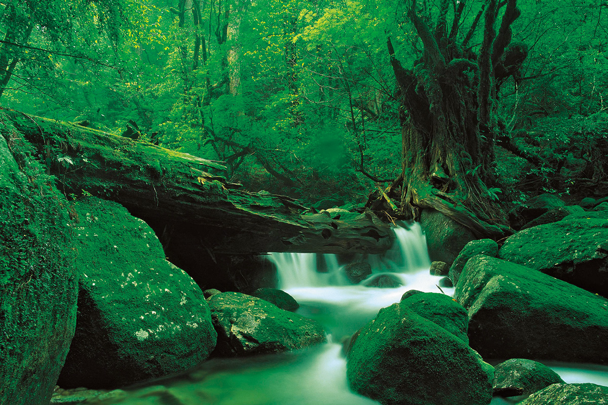
Yakushima Messenger
- Адрес
- префектура Кагосима, уезд Кумагэ, город Якусима, Косэда, 413-76
- Телефон
- +81 997-43-5630
- Часы работы
- офис 10:00–18:00, тур примерно 8:00–16:00
- Выходные
- нерегулярные
- Цены / Вход
- 12 600 иен со страховкой, дети до окончания начальной школы за полцены
Маршрут
Три дня в лесу по плану фотографа
Фотограф, который поднимался на Эверест и снимал в сорока странах, был на Якусиме уже пять раз. На острове есть поговорка: попасть сюда можно, только если Якусима сама тебя позовёт. Многие годами собираются и не могут выбраться, а его остров, видимо, зовёт часто. Свой маршрут на три дня и две ночи он описал в 2022 году.
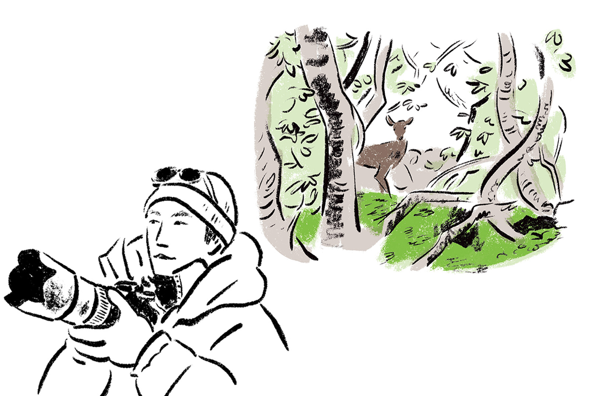
День первый: подготовка
Остров не так далёк, как кажется: из Токио с пересадкой лететь около трёх часов, и первым рейсом к девяти утра вы уже на месте. Можно взять машину напрокат и заняться сборами. Дождевик, треккинговые ботинки и рюкзак на Якусиме берут напрокат. Фотограф всегда заходит в прокат «Сангаку Таро» и покупает там еду и газовую горелку. В этот раз он собирался ночевать в лесу, поэтому брал ещё палатку и спальник.
Обедать он советует в «Якудоне»: здесь подают целиком жаренную летучую рыбу и якусимскую лапшу удон. Из окна видно море, бульон мягкий, а рыбу едят с головой, с хрустом. После обеда лучше отдохнуть. Его постоянная гостиница THE HOTEL YAKUSHIMA OCEAN & FOREST, а во второй половине дня можно съездить к водопаду Сэмпиро. Ложиться стоит пораньше.
День второй: моховой лес и Дзёмон-суги
Выходят в половине пятого утра от площадки Сиратани. В темноте тропа идёт вверх вдоль реки, лес постепенно просыпается, и если повезёт, из зарослей выглянет якусимский олень. Через полтора часа начинается моховой лес: сотни видов мха, и куда ни посмотришь, всё зелёное. Здесь стоит сделать долгий привал. Выше по тропе есть скала Тайко-ива, с неё открывается широкий вид.
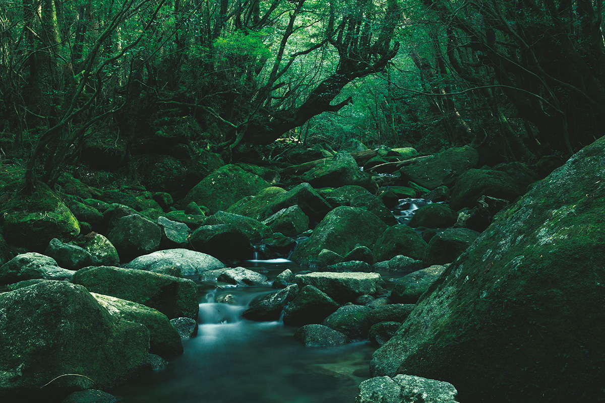
Дальше путь лежит к Дзёмон-суги через глубокий лес из деревьев, которым сотни и тысячи лет. Отдыхать можно сколько угодно: спешить некуда ни в жизни, ни в горах. К кедру выходят перед закатом, почти без сил, и, по словам фотографа, именно поэтому особенно ощущают его силу. Возраст Дзёмон-суги оценивают по-разному, от 2000 до 7000 лет.
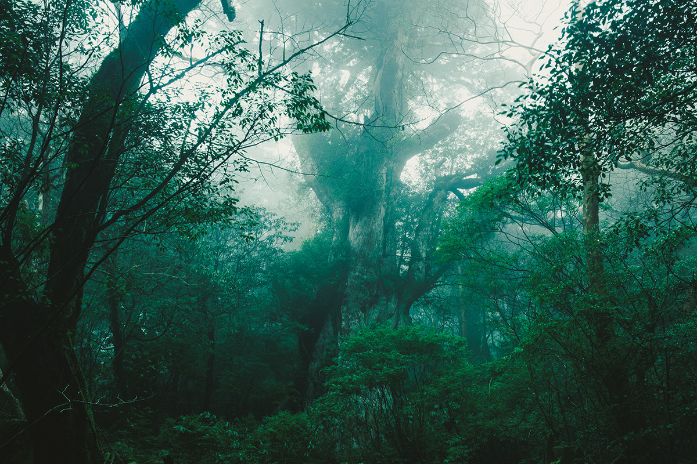
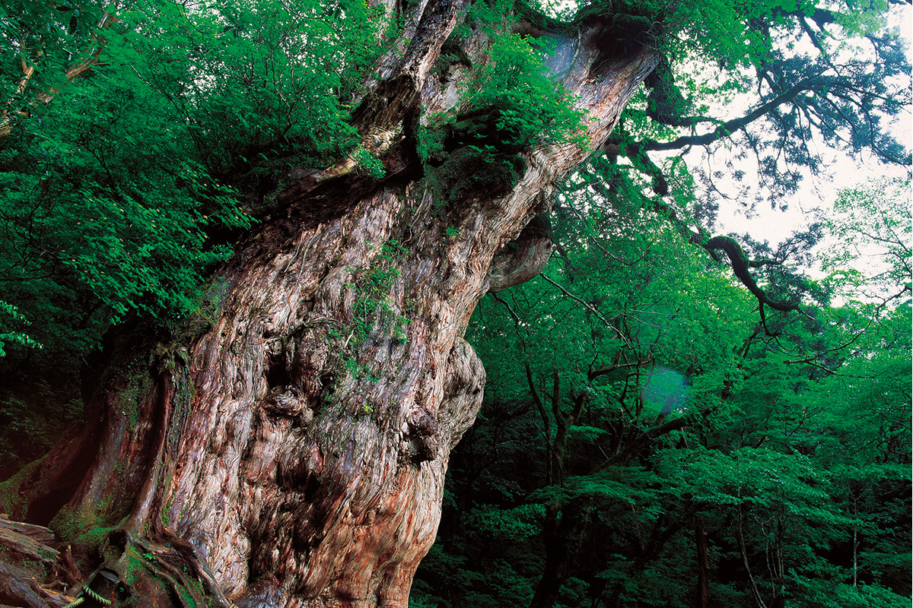
Ночь проводят в палатке. Карри или рамэн, для которых нужен только кипяток, кажутся здесь вкуснее, чем в любом ресторане. Когда стемнеет, стоит отложить телефон и посмотреть вверх: звёзд над лесом столько, что их не сосчитать. Нет ни круглосуточного магазина, ни душа, ни кондиционера, зато есть лес, шум реки и звёзды.
«Этого достаточно. Сердце обязательно наполнится»
фотограф
День третий: спуск и онсэн у моря
Утро фотограф начинает с кофе: кипятит воду, заваривает, и вокруг разносится аромат. После завтрака палатку и спальник собирают и спускаются. Лес в утренней дымке выглядит совсем иначе, чем накануне. Обратно он советует идти по другой тропе, по старой узкоколейке к началу маршрута Аракава. Если выйти рано, к полудню вы уже внизу.
После двух дней пути лучше всего онсэн с видом. На Якусиме два открытых источника прямо на берегу моря. Фотограф ездит в Хираути-Кайтю: в нём можно купаться только около двух часов до и после отлива, дважды в день, так что нужна удача. Если время не совпадает с отливом и надо успеть на самолёт, выручит круглосуточный онсэн Юдомари. В обоих в 2022 году просили добровольный взнос 200 иен. Лучше всего успеть к закату.
Прокат «Сангаку Таро»
- Адрес
- префектура Кагосима, уезд Кумагэ, город Якусима, Анбо, 410-8
- Телефон
- +81 997-49-7112
- Часы работы
- 9:00–18:30
- Выходные
- без выходных (зимой нерегулярные)
- Сайт
- andes-k.co.jp
«Якудон»
- Адрес
- префектура Кагосима, уезд Кумагэ, город Якусима, Анбо, 500-46
- Телефон
- +81 997-46-3210
- Часы работы
- 11:00–14:15
- Выходные
- нерегулярные
Онсэн Хираути-Кайтю
- Адрес
- префектура Кагосима, уезд Кумагэ, город Якусима, Хираути
- Телефон
- +81 997-47-2953 (общественный центр Хираути)
- Часы работы
- около двух часов до и после отлива, дважды в день
- Цены / Вход
- добровольный взнос 200 иен
Онсэн Юдомари
- Адрес
- префектура Кагосима, уезд Кумагэ, город Якусима, Юдомари, 1714-28
- Телефон
- +81 997-43-5900 (отдел туризма мэрии Якусимы)
- Часы работы
- круглосуточно
- Цены / Вход
- добровольный взнос 200 иен
Онсэн
Оноайда: источник, которому 350 лет
Ещё один онсэн любят сами жители острова. Онсэн Оноайда, по преданию, открыли около 350 лет назад. Вода температурой 49 °C поднимается прямо из-под камней ванны и течёт без рециркуляции. Это мягкая, словно маслянистая сернистая вода. Считается, что она помогает при невралгии, ревматизме и женских болезнях и хорошо снимает усталость с дороги. Вход в 2023 году стоил 300 иен для взрослых.
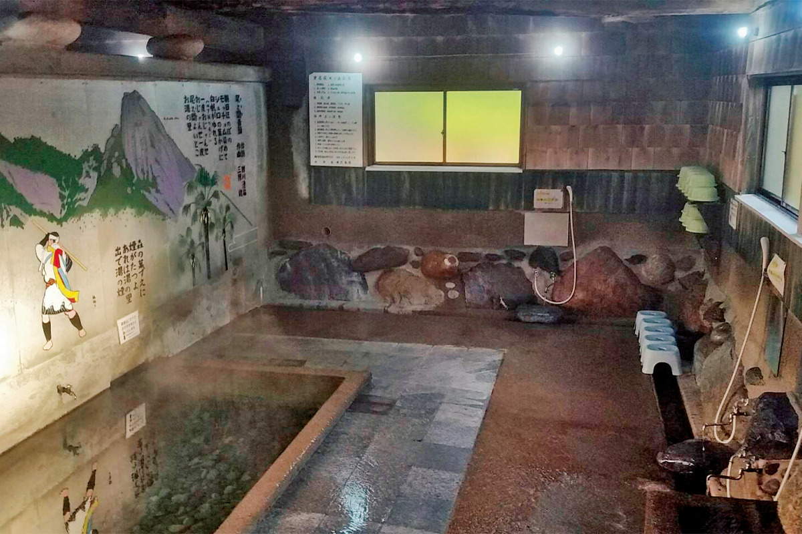
Онсэн Оноайда
- Адрес
- префектура Кагосима, уезд Кумагэ, город Якусима, Оноайда, 1291
- Телефон
- +81 997-47-2872
- Часы работы
- 7:00–21:00, в понедельник с 12:00
- Выходные
- нерегулярные
- Цены / Вход
- взрослые 300 иен, дети 150 иен
Еда и лавки
Остров, где близко люди
Чтобы увидеть Якусиму без прикрас, стоит зайти в местные заведения. Владельцы магазина YAKUSHIMA BLESS говорят, что остров учит довольствоваться тем, что есть.
«Стоит свернуть с префектурной дороги, и вид сразу меняется. Хочется, чтобы гости шли не спеша и почувствовали остров таким, какой он есть»
владельцы YAKUSHIMA BLESS
«Катагири-сан»: семейная столовая
В простой местной столовой «Катагири-сан» готовят пасту с местной рыбой, японские обеды из кагосимской чёрной свиньи, подают местный сётю и закуски. Есть детский уголок, поэтому сюда охотно приходят семьями.
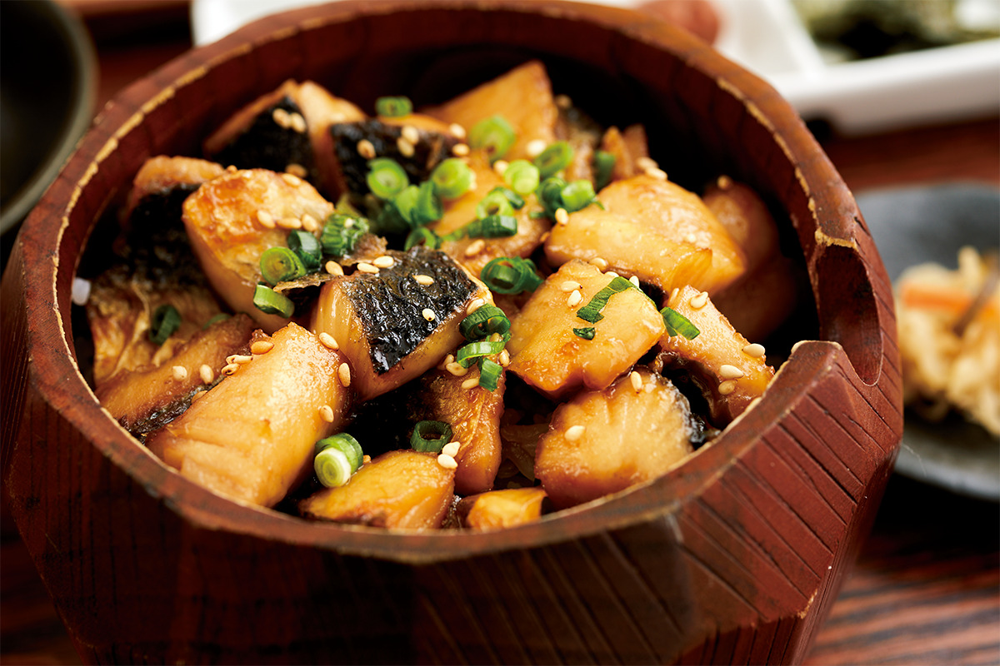
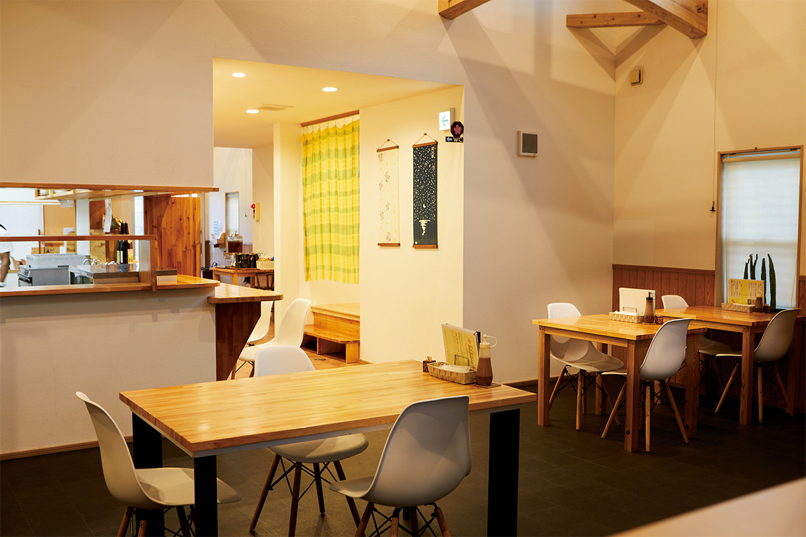
«Катагири-сан»
- Адрес
- префектура Кагосима, уезд Кумагэ, город Якусима, Анбо, 540-62
- Телефон
- +81 997-46-4282
- Часы работы
- 11:00–15:00 (последний заказ 14:30), 17:30–21:00 (последний заказ 20:30)
- Выходные
- воскресенье
- Сайт
- katagirisan.com
YAKUSHIMA BLESS: остров в вещах
Магазин принадлежит старой фирме «Такэдакан», которая выросла из заготовки якусимского кедра. Здесь продают вещи небольших тиражей, которые мастера со всей Японии сделали с мыслью о Якусиме.
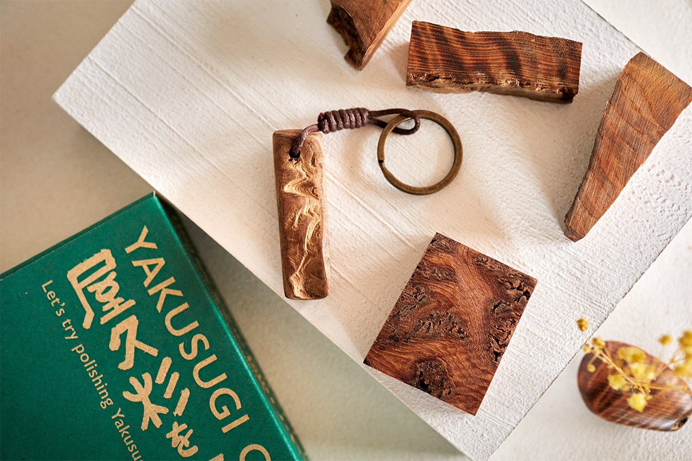
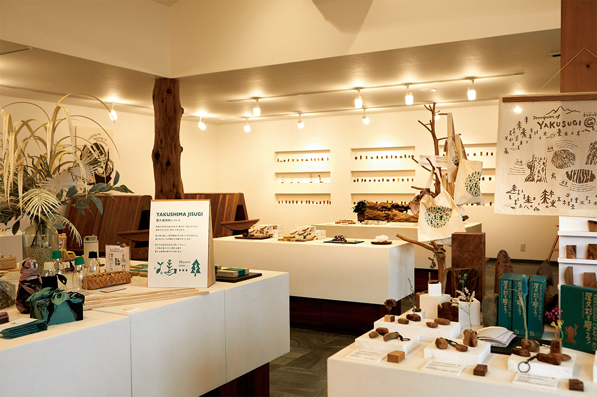
YAKUSHIMA BLESS
- Адрес
- префектура Кагосима, уезд Кумагэ, город Якусима, Анбо, 650-18
- Телефон
- +81 997-46-2899
- Часы работы
- 9:00–17:00
- Выходные
- нерегулярные
PANORAMA: ужин в старом доме
Семейный ресторан PANORAMA находится в старом японском доме. Хозяин работал и в суши-ресторанах, и в европейской кухне, а теперь по-своему готовит рыбу дневного улова, островные овощи и мясо. В меню лёгкие закуски, гёдза с мясом якусимского оленя, сытные миски риса и горшочки с потрохами. Дети после школы делают здесь уроки прямо в зале.
«Здесь рядом не только море, горы и реки, но и люди. В этом и есть прелесть Якусимы»
хозяин PANORAMA
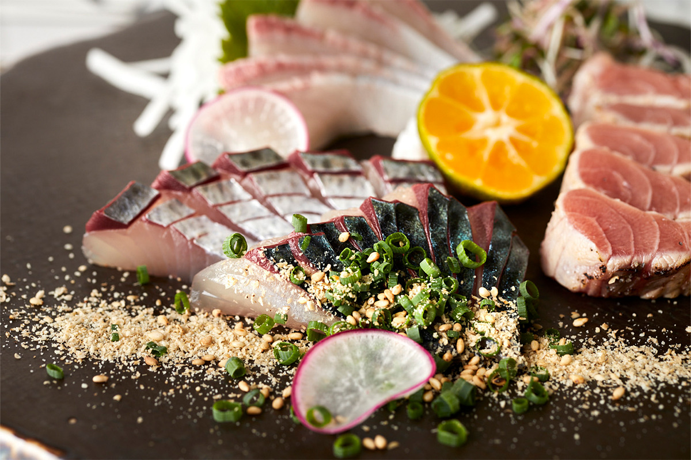
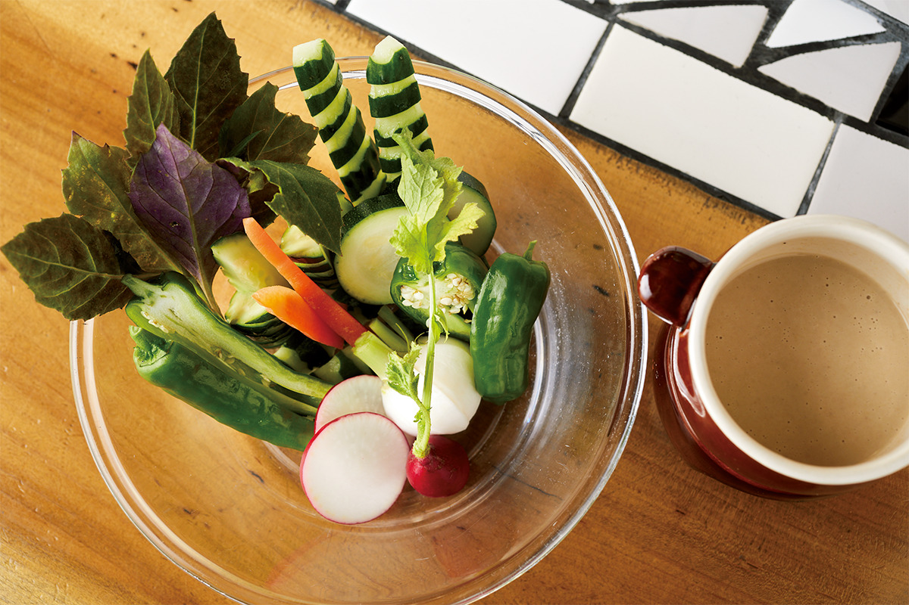
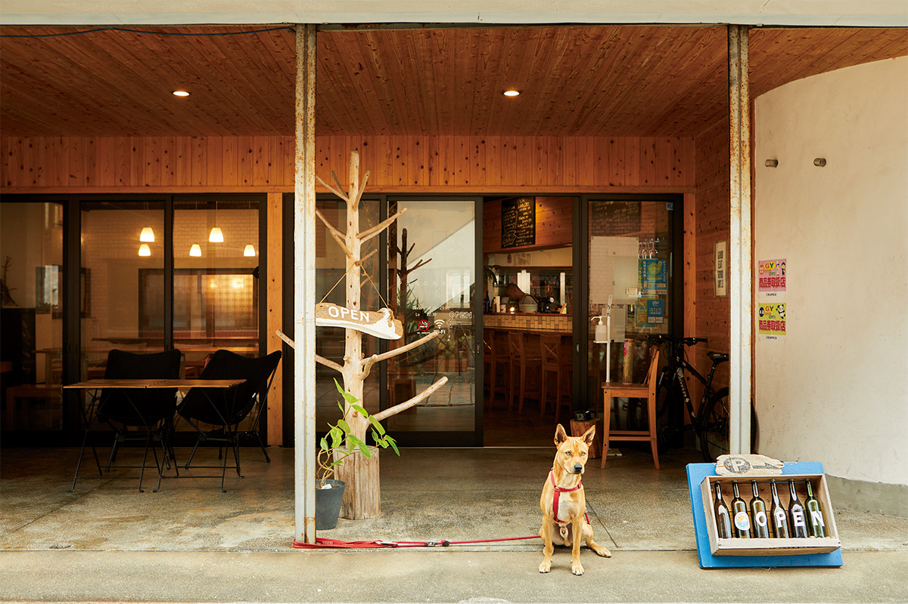
PANORAMA
- Адрес
- префектура Кагосима, уезд Кумагэ, город Якусима, Мияноура, 60-1
- Телефон
- +81 997-42-0400
- Часы работы
- 18:00–23:00 (последний заказ 22:30)
- Выходные
- среда
Ночлег
Где остановиться
Yakushima Iwasaki Hotel стоит на юге острова, в Оноайде. Здесь собственный сернистый онсэн с видом на горы, бассейн с джакузи, а по большой территории можно гулять мимо водопада, оленьего загона и пальмовой рощи. В 2023 году номер с ужином и завтраком стоил от 21 000 иен без налога. Любимая гостиница фотографа, THE HOTEL YAKUSHIMA OCEAN & FOREST, находится в Мияноуре, на севере острова: в 2022 году ночь с ужином и завтраком стоила от 16 500 иен с налогом.
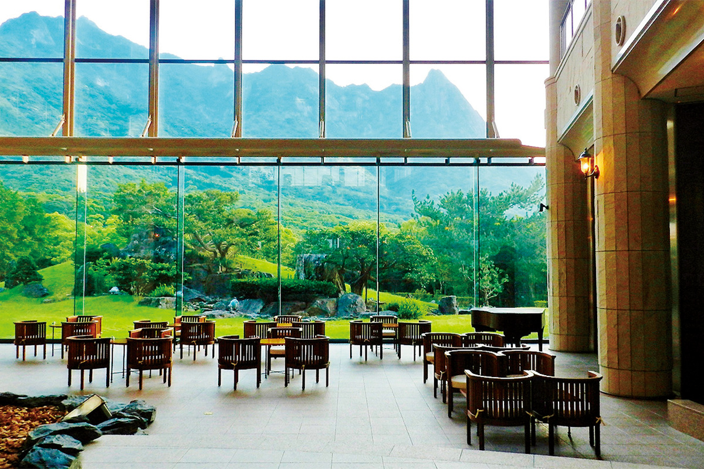
Yakushima Iwasaki Hotel
- Адрес
- префектура Кагосима, уезд Кумагэ, город Якусима, Оноайда, 1306
- Телефон
- +81 997-47-3888
- Номера
- 125
- Цены / Вход
- с ужином и завтраком от 21 000 иен без налога
THE HOTEL YAKUSHIMA OCEAN & FOREST
- Адрес
- префектура Кагосима, уезд Кумагэ, город Якусима, Мияноура, 1208-9
- Телефон
- +81 997-42-0175
- Цены / Вход
- с ужином и завтраком от 16 500 иен с налогом
Как добраться
- Как добраться
- из аэропорта Итами (Осака) до аэропорта Якусимы около 1 ч 30 мин; паром из порта Кагосимы (южный причал) до порта Мияноура около 4 часов; из Токио с пересадкой около 3 часов
Фото: Кэндзи Окадзаки, Юки Уэда, Саки Матида (иллюстрация).